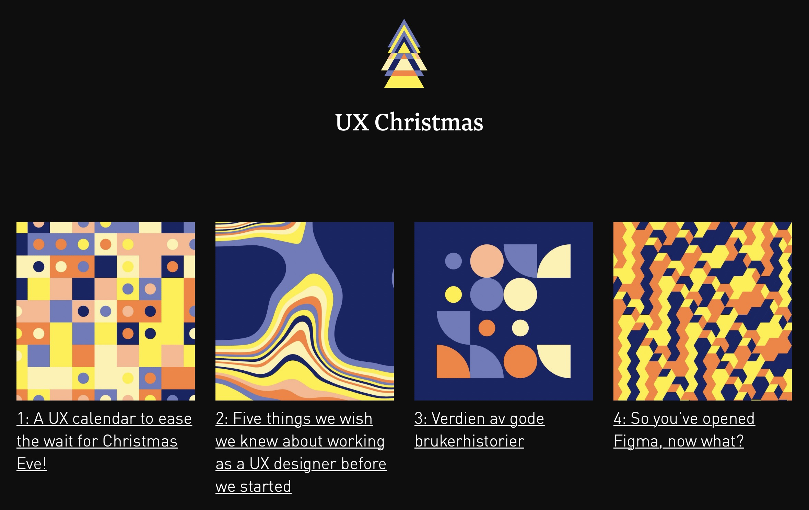

设计周刊 Design Weekly #37
Thu, Dec 10, 2020
📕 设计资源
DesignRemotely - 远程设计师的资源库
网站中包含了精心挑选的来自世界各地公司的招聘信息，以及远程设计师的采访、文章、工具等其他资源。
UX Chrismas - 用户体验日历
24天24条原创用户体验内容的圣诞日历，由致力于技术、创新、设计的 Bekk 制作ing， 2020 年的已更新至 10 日，日历底部有链接可以跳转 2019 年已完成的圣诞日历。每个内容的封面都是由抽象元素和鲜明对比的色彩组成，看着很是舒服。

📗 设计文章
100 design lessons for 2021
UXDesign 每年都会发布新的一年的设计趋势，而今年的内容强调了2020 年给我们的教训，区别于设计主流中不常听到的声音，带给我们更多思考。
动效设计指南
https://uxdesign.cc/a-guide-to-motion-design-principles-7f05f10ccd79
动效设计对于数字产品的用户体验有着深远影响，但如果界面元素并没有遵循基本的动效设计原则，产品的可用性会被削弱。动效设计不仅仅是一种视觉上的装饰，它是提高产品参与度的重要力量。
Element - 网站快速成型工具
https://element-plus.gitee.io/#/zh-CN
Element Plus，一套为开发者、设计师和产品经理准备的基于 Vue 3.0 的桌面端组件库
📙 设计新闻
Github 的新主页
https://www.topys.cn/article/31224
全球大型同性交友网站更新主页啦，新增了一个展示代码提交动效的旋转地球~
Sketch 新设计的 BigSur 风格图标
https://www.sketch.com/blog/2020/12/02/how-we-redesigned-the-sketch-icon-for-big-sur/
文中记录了 Sketch 设计团队重新设计图标的过程细节。